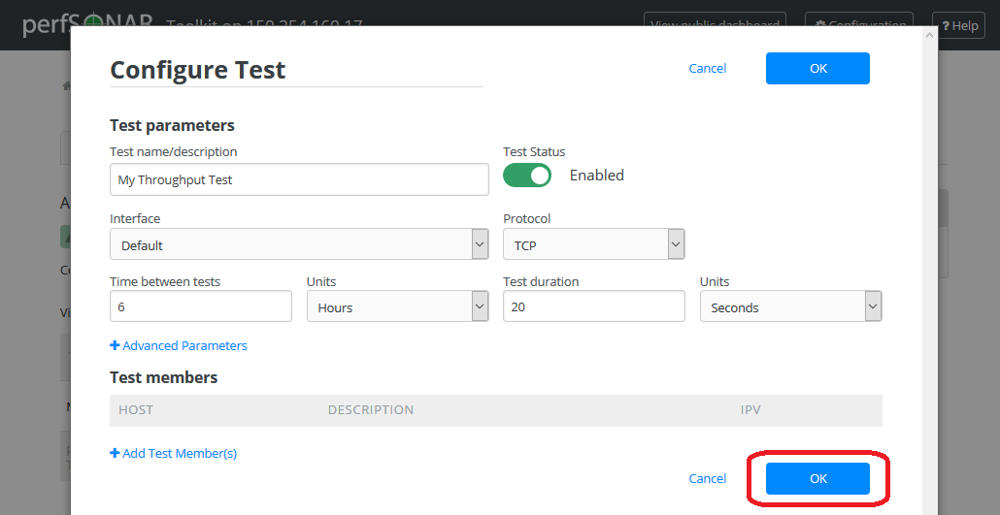

Configuring Regular Tests¶
A core function of the perfSONAR Toolkit is to run regularly scheduled network measurements. You can define the tests you want run through the toolkit’s web interface. This section describes using the interface to manage the set of tests run by tour toolkit node.
See also
What is pSConfig? for information on an alternative way to configure tests when your host is participating in a large community or you manage multiple hosts.
See also
Locating Remote perfSONAR testpoints for information on finding remote hosts to run tests to.
Accessing the Configuration interface¶
Open http://<hostname> in your browser where <hostname> is the name of your toolkit host.
Click on Configure Tests in section Test Results of the page that loads.

- Login using the web administrator username and password.
See also
See Managing Users for more details on creating a web administrator account.
The page that loads can be used to manage regular tests. See the remainder of this document for details on modifying tests and test hosts.

Types of Regular Tests¶
As a first step test definition must be added. Multiple types of tests can be configured through the web interface. They are described below:
- Throughput
- This type of test measures the amount of data that can be transferred over a period of time. It is implemented using a tool called pScheduler that makes sure the throughput tests do not conflict with each other. By default pScheduler executes iperf3 to actually measure throughput, but iperf2 and nuttcp can also be used. For a description of the pros and cons of each tool, see fasterdata.es.net.
- Ping
- This type of test measures the round-trip-time of packet and other statistics such as loss. The pScheduler tool is used to manage the schedule and it spawns a ping command to perform the actual measurement. Ping collects similar statistics to the one-way latency test (such as packet loss) but does so at a much less granular level and without regard for whether the measured value occurred on the forward or reverse path. The advantage of ping tests is that many sites accept ping tests without the need for firewall modifications or special daemon’s running on the target host.
- One-way latency
- This type of test measures delay and loss separately for each direction of a path (as opposed to combining the values of each direction as ping tests). The underling tool run is an OWAMP client. This type of test runs constantly sending several packets each seconds. This allows it to find very small amounts of loss if present that may be missed by other tools. If also running throughput tests, you may see anomalies such as a sudden burst of loss when throughput tests run. For this reason it is often recommended you run this type of test on a separate interface or host than the throughput tests. See Configuring a Host with Multiple Interfaces for more information on running tests on separate interfaces.
- Traceroute
- Traceroute tests periodically measure the path between the source and destination. By default this type of test will automatically be added every time you add any of the other types of tests. This type of test is crucial in determining how a packet traverses a network and can be helpful in identifying events such as path changes that affect other test types. The underlying tool is pScheduler to manage scheduling the test and the tracepath command to actual perform the measurement. The tool will fallback to traceroute if tracepath is not installed on the source host for some reason (all Toolkit hosts come with tracepath by default). It is also possible to choose paris-traceroute as in underlying tool.
Adding Regular Tests¶
On the main page of the tests configuration interface click on the +Add Test button too choose and add the test type you would like.

A drop-down list shows to choose the test type. Click on a selected test type you would like to add.

A new window will appear prompting you for the parameters of the test. Each test contains a Test name/description field you are required to define. The Test name/description is a human-readable string and will only be used on this interface to identify the test. In order to access additional test parameters click +Advanced Parameters. The tables below describe remaining parameters including Advanced Parameters:
Throughput

Field Default Description Type Thoughput Indicates the current test type Test name/description A string to identify this test Test Status Enabled Indicates if the test is enabled Interface Default The network interface on which to run the test. The default is the default interface of the host. Use this field if you have multiple interfaces and want to specify the interface where this test runs. Time between tests 6 hours The amount of time in between tests. Throughput tests consume bandwidth so usually only run a few times a day. The default is every 6 hours. Note that the tests will not run exactly every 6 hours as some randomization occurs to prevent tests from running in sequence at the beginning of the interval. Units Hours Indicates units of time Test duration 20 seconds The length of the tests to be run. TCP requires time to ramp up, especially as the latency increases. Consider using a larger value if the test subjects are further away. Protocol TCP The transport protocol to be used. It can be TCP or UDP. UDP Bandwidth (MB) Not set Field only appears if Protocol is set to UDP. For UDP this sets the target bandwidth in Mbps. Note that you should be careful with high values since UDP is not a “fair” protocol (in contrast to TCP) and will not back-off on bandwidth if it encounters other traffic. Also note that many perfSONAR instances disallow UDP by default, setting this option may require coordination with remote testers to allow the test to complete. Tool(s) iperf3, iperf The underlying tool to perform throughput tests. By default it prefers the newest version of iperf3, but will fallback to an older iperf version automatically if the remote endpoint does not support it. Direction Send and Receive The direction of the tests to be run from/to this host. Use this field to indicate send only, receive only or both directions. Use Autotuning Enabled Allows the TCP window size to be automatically calculated. Window Size (MB) Not Set If Use Autotuning is not checked then this field appears. Manually sets the value of the TCP window size. Number of Parallel Streams 1 Number of concurrent streams for the test to run. Omit Interval (sec) 0 Initial period of data to omit from the final statistics. This is so that you can skip past initial conditions such as TCP slow start. Currently only implemented by the iperf3 tool. Use Zero Copy Disabled Allows to set using a “zero copy” method of sending data, such as sendfile() system call. This uses much less CPU to put the data. Currently only implemented by the iperf3 tool. TOS bits 0 A value between 0 and 255 that will be set in the TOS field of the IP header, and will only have impact on networks that support QoS specifications. If you are unsure about this field, leave the default. Single-ended testing Disabled Tells test to assume that pScheduler is not on the remote host and to run test without coordination. This requires a server such as iperf, iperf3 or nuttcp to be running on the far-end. It also has the limitation that there is no way to guarantee the far end is not running other tests. Ping

Field Default Description Type Ping Indicates the current test type Test name/description A string to identify this test Test Status Enabled Indicates if the test is enabled Interface Default The network interface on which to run the test. The default is the default interface of the host. Use this field if you have multiple interfaces and want to specify the interface where this test runs. Time between tests 5 minutes The amount of time in between tests. Ping tests are low bandwidth and generally run every few minutes. Units Minutes Indicates units of time Packets per test 10 The number of packets to send per test. Multiplying by the Time between packets yields the duration of the test in seconds. Time between packets 1 second The time to wait in between sending packets. Multiplying by the Packets sent per test yields the duration of the test in seconds. Packet Size (bytes) 1000 The size of the packets sent One-way delay

Field Default Description Type One-way latency Indicates the current test type Test name/description A string to identify this test Test Status Enabled Indicates if the test is enabled Interface Default The network interface on which to run the test. The default is the default interface of the host. Use this field if you have multiple interfaces and want to specify the interface where this test runs. Packet Rate 10 packets per second The number of packets sent each second. Note that each OWAMP daemon has limitations on the bandwidth for tests. If the packet rate and packet size exceed available bandwidth, tests may be denied. Packet Size (bytes) 20 The size of the packets sent. Note that each OWAMP daemon has limitations on the bandwidth for tests. If the packet rate and packet size exceed available bandwidth, tests may be denied. Traceroute

Field Default Description Type Traceroute Indicates the current test type Test name/description A string to identify this test Test Status Enabled Indicates if the test is enabled Interface Default The network interface on which to run the test. The default is the default interface of the host. Use this field if you have multiple interfaces and want to specify the interface where this test runs. Time between tests 10 The amount of time in between tests. Traceroute tests are low bandwidth and may run every few minutes. Units Minutes Indicates units of time Packets Size(bytes) 40 The size of the packets sent First hop to report The first hop to report starting at 1. The default is to report all hops. If you would like to hide the first few hops, set this to a value greater than 1. Maximum number of hops The maximum number of hops to traverse before the traceroute is abandoned. Tool(s) Default The command-line utility used to perform the traceroute. If Default is selected then it will run the tracepath command and fall back to traceroute if both endpoints do not support the tool. Alternatively you can select amongst one of tracepath, traceroute or paris-traceroute. On the same window you will be able to add hosts to which you want to test. You may also add hosts separately later.
Go to the bottom of the page and edit Test members section.

Enter the address or host name of the test member you wish to add in the Host name field. You can also add a human-readable description to the Host description field that will only be used by this interface when displaying the host. If necessary select additional protocol type.
- Valid values are:
- IPv4 - One test is run to the target host using IPv4
- IPv6 - One test is run to the target host using IPv6
- By default the interface will automatically decide on whether to setup an IPv4 and/or an IPv6 test. The behavior is described below:
- If the selected local interface has both IPv4 and IPv6 address AND the address added to the test is a hostname with both IPv4 and IPv6 entries, then both an IPv4 and IPv6 test will be setup.
- If the local interface has only an IPv4 address or the remote host is an IPv4 address (or a hostname with only an IPv4 entry), then only an IPv4 test will be setup.
- If the local interface has only an IPv6 address or the remote host is an IPv6 address (or a hostname with only an IPv6 entry), then only an IPv6 test will be setup.
When you are done click Add host.

The new test member for the test defined is now shown in the section Test members.
Repeat the above step clicking +Add Test Member(s) if you would like to add more hosts to the test.

If you are content with this setup then there is nothing to do. If you would like to remove these tests click trash icon. See Deleting Test Members and Deleting Regular Tests for more details on removing these tests if you so desire.
Click OK to save test definition. If you would like to add more tests click +Add Test button again and repeat above steps to add new test.
Click the Save button at the bottom of the screen to apply your changes.

Wait while the configuration is applied and services are restarted. Your tests should now be running and you should see the green message as shwon below.

Take note that a traceroute test is automatically added when you add a non-traceroute test.

It may take several hours for throughput data to appear and several minutes (depending on the time between tests) for the other test types. If the tests are working you should be able to data in the graphs.
See also
See Test Results Graphs for details on reading graphs
Editing Regular Tests¶
Changing Test Parameters¶
You may modify settings of a test after adding it. Access the regular testing interface under Tests tab and in the list of tests click the configuration icon under ACTIONS next to any test you wish to change:

From the page that loads you can make a number of changes. See the sections that follow for details on how to make some specific changes. See the tables here for complete listing of parameters and their meanings. Click OK to leave the test configuration window and keep your changes.
If you are done with making necessary tests modification click the Save button at the bottom of the screen to apply all your changes.
Deleting Test Members¶
In the Configure Test configuration page, uder Test members section find the test member you wish to remove and click the trash bin symbol next to it.

You should no longer see the host in the list of Test members.
If you are done making changes click OK to accept test configuration change and then Save to apply your changes to the system.
Adding Test Members¶
From the configuration interface, the process for adding more test members is the same as that detailed in the section here.
Changing Test Member IP Address Settings¶
When you add a new test member, the configuration automatically determines if you should the test should run using IPv4, IPv6 or both. See the discussion on IP type when adding a new test for more details on the default behavior. If you would like to override the default behavior or update the host address do the following:
In the Configure Test configuration page, under Test members section find the test member you would like to update and select the desired protocol type.

Warning
Checking the IPv4 and IPv6 or text boxes will create a test that forces that address family. If the local interface or remote host does not support that address type your test will be unable to run. For example, if the remote host is an IPv4 address but only the IPv6 checkbox is selected then it will be impossible to run a test. There is also a warning in the web interface in these cases.
If you are done making changes click OK to accept test configuration change and then Save to apply your changes to the system.
Disabling/Enabling Regular Tests¶
In some cases it may be desirable to stop running tests for a period of time, but not to delete them entirely. This allows them to be enabled again at a later time without recreating the entire test set. To disable or enable an existing test set do the following:
Under Tests tab open the Configure Test configuration page selecting appropriate symbol from ACTIONS next to a test you want to disable.
Click Test Status switch to change test status from Enabled to Disabled or vice versa.

This should change the switch to gray indicating disabled test as shown below

When you are done making changes click OK to accept test configuration change and then Save to apply your changes to the system. Scheduled test list will indicate the current status of this option.
Deleting Regular Tests¶
The interface allows you to completely delete a test set. This will stop all tests in the set from running and completely remove them from the configuration interface. If after deleting a test set, you would like to re-add the tests, you will have to completely recreate the test set.
Note
Deleting a test set will NOT delete the historical results stored on the host. You will be able to view the historical data on the graphs after deleting the test set.
You may delete a test with the following steps:
Go to the Tests tab to see the current list of tests. Uder list of tests find the test you wish to remove and click the trash bin symbol next to it.

You will be presented with a warning message to confirm you want to delete this test. When confirmed you should no longer see the test in the list of tests.

When you are done making changes click the Save button.